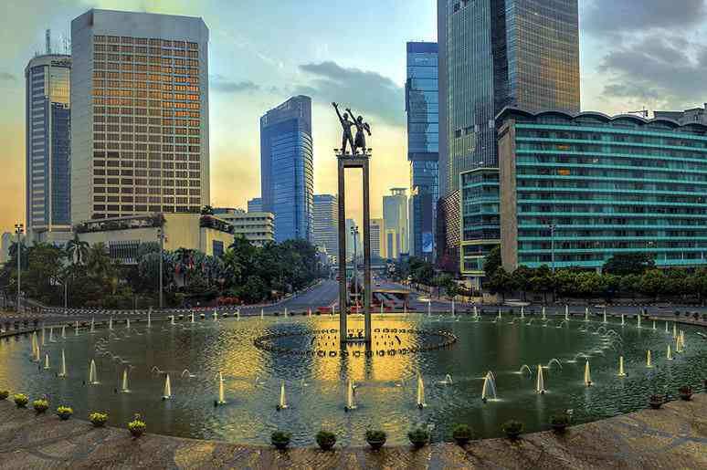

Sejarah

Jakarta memiliki sejarah panjang yang dimulai dari asal-usul nama "Jayakarta," yang berarti "kemenangan yang gemilang." Pada masa kolonial Belanda, kota ini dikenal dengan nama Batavia dan menjadi pusat pemerintahan kolonial. Setelah Indonesia merdeka pada tahun 1945, Batavia diganti namanya menjadi Jakarta. Sejak itu, Jakarta terus menjadi pusat pemerintahan dan administrasi Indonesia, serta memainkan peran penting dalam sejarah nasional.
Geografi
Jakarta berlokasi di sebelah utara Pulau Jawa, di muara Ciliwung, Teluk Jakarta. Seluruh wilayah Jakarta terletak di dataran rendah pada ketinggian rata-rata 8 meter dpl dengan titik tertinggi Jakarta adalah 91 meter dpl berada di Kawasan Buperta Cibubur, Cipayung, Jakarta Timur yang merupakan ujung terendah dari formasi dataran Jonggol-Jatiluhur.
Wisata
Jakarta menawarkan berbagai destinasi wisata menarik. Kebanyakan orang akan berpendapat kalau Jakarta lebih identik dengan gedung-gedung tinggi serta pusat perbelanjaan barang mewah. Padahal, Jakarta juga menawarkan beragam wisata yang menarik untuk dikunjungi.
Monumen Nasional

Monumen Nasional atau yang disingkat dengan nama Monas adalah destinasi wisata Jakarta yang sekaligus menjadi ikon kota Jakarta. Tak lengkap rasanya jika kita tidak datang ke Monas saat sedang berwisata di Jakarta. Ini merupakan tempat wisata murah di Jakarta yang patut Moms kunjungi bersama keluarga. Monas adalah sebuah monumen peringatan setinggi 132 meter.
Sea World Ancol
Masih di kawasan Taman Impian Jaya Ancol, ada Sea World yang merupakan wisata Jakarta yang menyajikan biota laut di dalam akuarium raksasa. Moms bisa menelusuri terowongan bawah air, berinteraksi dengan hewan air, hingga menyaksikan pemberian makan hewan laut.